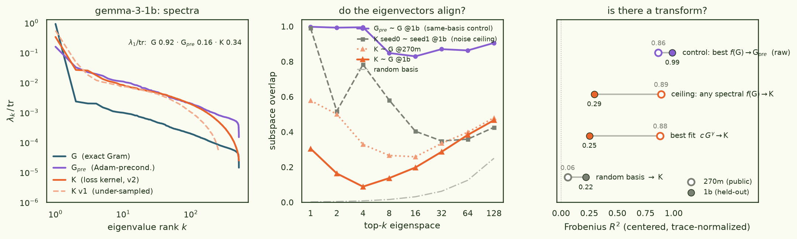
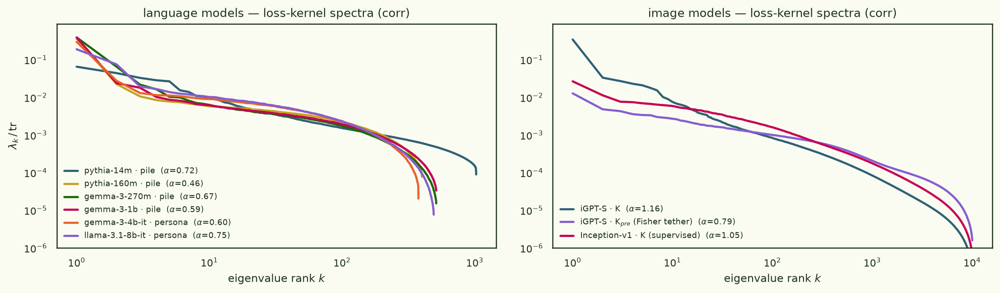
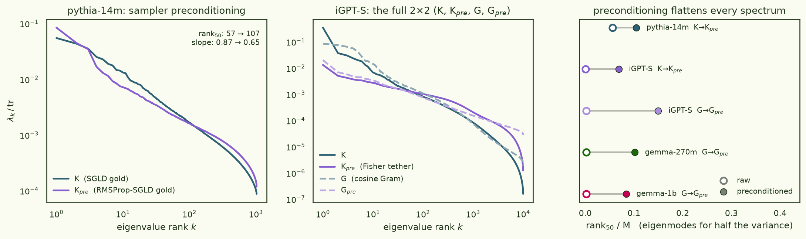
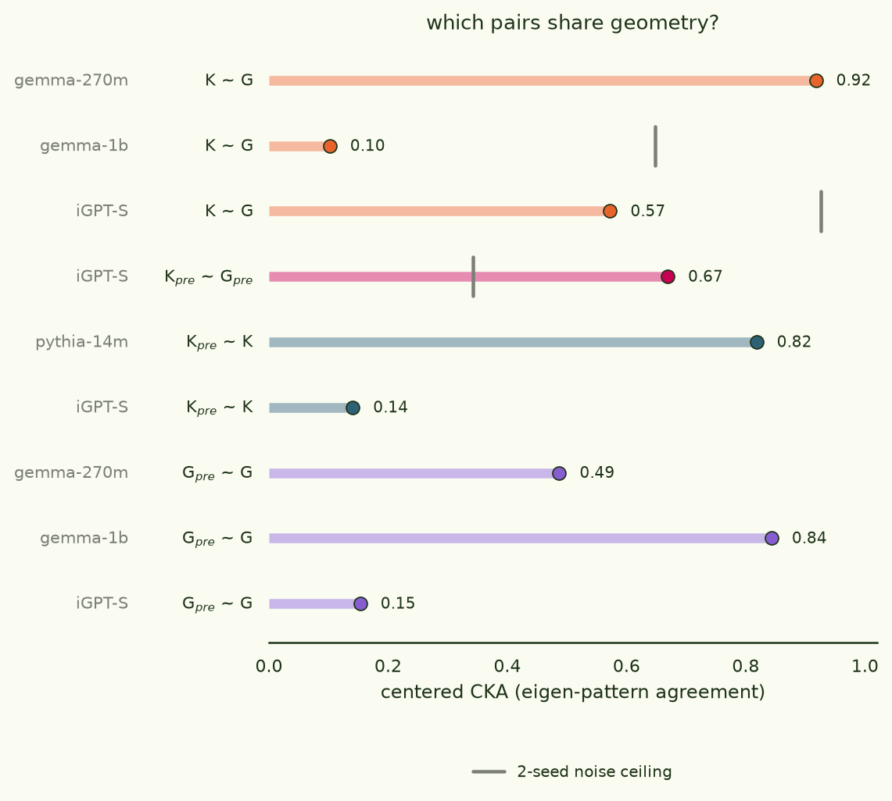

The spectra of loss kernels
Across the loss-kernel thread and the
training-prediction work we have
quietly accumulated a zoo of second-moment matrices: SGLD-sampled
K
on eight different models, two preconditioned loss kernels
Kpre, and exact gradient Grams G / Adam-preconditioned Grams
Gpre at three of those models. This page eigendecomposes all of
them — no new training, no new sampling, just eigh on matrices we already
had — and asks three questions: what do the spectra look like, what does
preconditioning do to them, and when do two of these objects share an
eigenbasis rather than just a spectrum?
Every loss kernel we have ever computed has a heavy-tailed power-law spectrum whose top mode leans on the common mode — and the spectrum transfers across model scale while the eigenbasis does not: the spectral transform f(G) → K that exists at gemma-270m is gone at gemma-1b.
§1The four objects, and what we have
All four matrices are M×M Grams over a fixed probe set of documents (or images), computed once at the trained checkpoint w0:
- K
- loss kernel: covariance of per-document losses under a localized posterior around w0 (the estimator; block-centred, seed-gated)
- Kpre
- the same loss kernel sampled under preconditioned dynamics — RMSProp-SGLD at its own calibrated step size (pythia-14m gold), or an isotropic sampler with a (iGPT-S)
- G
- exact gradient Gram Gij = gi · gj at w0 (one-checkpoint TracIn; cosine-normalized for iGPT-S)
- Gpre
- Adam-preconditioned Gram giᵀ diag(1/√v) gj, LESS-style
Theory says these are all the same thing in different metrics: linearize the model and the delta method gives K ≈ J Σ Jᵀ where Σ is the posterior covariance — a curvature-filtered Gram of the same per-document gradients that build G = JJᵀ and Gpre = JPJᵀ. Whether that relationship is visible downstairs, in 512-doc space, is an empirical question. The coverage:
| model | probe set | M | K | Kpre | G | Gpre | experiment |
|---|---|---|---|---|---|---|---|
| pythia-14m | pile, 8 domains | 1024 | ✓ gold | ✓ pSGLD | — | — | sampler A/B |
| pythia-160m | pile, 8 domains | 400 | ✓ ×2 seeds | — | — | — | estimator validation |
| gemma-3-270m | pile, 8 domains | 512 | ✓ | — | ✓ | ✓ | training-prediction (public) |
| gemma-3-1b | pile, 8 domains | 512 | ✓ v1+v2 | — | ✓ | ✓ | training-prediction (held-out) |
| gemma-3-4b-it | persona responses | 376 | ✓ ×2 seeds | — | — | — | character-BIF (OCT) |
| llama-3.1-8b-it | persona responses | 490 | ✓ ×2 seeds | — | — | — | character-BIF (TIDE) |
| iGPT-S | ImageNet val | 10000 | ✓ ×2 seeds | ✓ Fisher ×2 | ✓ cos | ✓ cos | ImageNet kernel |
| inception-v1 | ImageNet val | 10000 | ✓ ×2 seeds | — | — | — | ImageNet kernel |
iGPT-S is the only cell with the full 2×2 — both kernels and both Grams — and pythia-14m is the only direct K-vs-Kpre sampler A/B on language. Nobody has sampled a preconditioned kernel at Gemma scale yet (that's the obvious gap this page leaves open).
§2Gemma-3-1B: same spectrum, different basis
The training-prediction study left a specific puzzle. Its winning formula — developed on a public gemma-3-270m grid, scored on a sequestered gemma-3-1b reproduction — includes a pairwise-interaction term built from the top eigenmode of the exact Gram G, and the post-hoc ablations found that this term is nearly substitutable at the development scale: source it from the loss kernel's top eigenmode instead and the public-grid score barely moves (LDS 0.659 → 0.627). But the same substitution halves the held-out score at 1b (0.641 → 0.370). Somewhere between 270m and 1b, K's eigenvectors stop being interchangeable with G's. The spectral decomposition locates the change:

Three readings, in order of how much they surprised me:
- K and G share a spectrum but not an eigenbasis. At 270m the two matrices are strongly related as patterns (centered 0.92; the best matrix function of G reconstructs 88% of K's centered Frobenius mass). At 1b the same pipeline, same probe set, same estimator (v2, 2-seed gate 0.70) gives CKA 0.10, and no spectral transform can do better than 0.29 — the eigenvectors have decoupled, so nothing that preserves them can bridge the gap. Meanwhile both spectra still decay at slope 0.74. A term sourced from K's eigenmodes can imitate one sourced from G's only while the bases align — at 270m they do, at 1b they don't, and the ablation table's collapse (0.63 → 0.37) is that fact showing up in LDS units.
- K's top eigenvector is the common mode; G's is not. K's leading mode has overlap 0.99 with the uniform vector — "every document's loss moves together" — while G's leading mode overlaps uniform at only 0.57. The fine-tuning experiments measured this directly: 99.2% of the out-of-subset response is a universal improvement direction. The loss kernel sees that direction; the raw gradient Gram mostly doesn't.
- Estimator quality shows up in the spectrum tail first. The v1 kernel (too few effective samples) matched v2 at cos 0.97 in raw pattern but its spectrum told the truth: slope 1.06 vs 0.74 and a rank-250 cliff. A power-law slope check is a cheap under-sampling alarm that doesn't need a second seed.
§3The zoo: one power law everywhere
Same decomposition, every model. To compare kernels across probe sets and amplitude scales, the figure and table use the correlation flavour (unit diagonal); Fig. 1's covariance-flavour numbers differ slightly.

Numbers for every kernel and Gram (kernels in correlation flavour, for cross-model comparability):
| model | note | M | λ₁/tr | α | rank₅₀ | rank₉₀ | u₁ | seed CKA | |
|---|---|---|---|---|---|---|---|---|---|
| K | pythia-14m | pile · gold SGLD | 1024 | 0.065 | 0.72 | 90 | 627 | 0.58 | — |
| pythia-160m | pile · 2 seeds | 400 | 0.361 | 0.46 | 21 | 192 | 0.98 | 0.93 | |
| gemma-3-270m | pile | 512 | 0.390 | 0.67 | 5 | 175 | 0.99 | — | |
| gemma-3-1b | pile · v2 | 512 | 0.389 | 0.59 | 13 | 205 | 0.98 | 0.65 | |
| gemma-3-4b-it | persona responses | 376 | 0.296 | 0.60 | 23 | 157 | 0.99 | 0.51 | |
| llama-3.1-8b-it | persona responses | 490 | 0.189 | 0.75 | 27 | 173 | 0.96 | 0.68 | |
| igpt-s | ImageNet | 10000 | 0.344 | 1.16 | 9 | 1180 | 0.98 | 0.93 | |
| inception-v1 | ImageNet · supervised | 10000 | 0.027 | 1.05 | 261 | 2734 | 0.88 | 0.69 | |
| Kpre | pythia-14m | RMSProp-SGLD gold | 1024 | 0.088 | 0.49 | 167 | 700 | 0.54 | — |
| igpt-s | Fisher tether | 10000 | 0.013 | 0.79 | 715 | 4620 | 0.86 | 0.34 | |
| G | gemma-3-270m | raw Gram | 512 | 0.838 | 0.74 | 1 | 31 | 0.57 | — |
| gemma-3-1b | raw Gram | 512 | 0.918 | 0.74 | 1 | 1 | 0.57 | — | |
| igpt-s | cosine Gram | 10000 | 0.086 | 1.33 | 22 | 1059 | 0.16 | — | |
| Gpre | gemma-3-270m | Adam-precond. | 512 | 0.092 | 0.73 | 52 | 347 | 0.31 | — |
| gemma-3-1b | Adam-precond. | 512 | 0.158 | 0.75 | 43 | 332 | 0.56 | — | |
| igpt-s | cosine, precond. | 10000 | 0.020 | 0.66 | 1497 | 7414 | 0.87 | — |
Kernels shown in correlation flavour (unit diagonal) for cross-model comparability — Fig. 1 quotes the covariance flavour, hence small differences. Grams as stored (iGPT’s are cosine-normalized). α = power-law decay exponent fit over ranks 3 – M/3; rankq = modes holding q% of the trace; u₁ = |top eigenvector · uniform|; seed CKA = centered CKA between the two seed kernels (an eigen-pattern noise ceiling).
Consistent facts across the zoo: the spectrum is heavy-tailed everywhere (rank90 is a third of M, give or take — never low-rank in the "top ten modes suffice" sense), and the leading eigenvector is close to the uniform vector nearly everywhere (u-overlap 0.53–0.99, strongest for the Gemma/llama kernels). The power-law exponent is remarkably insensitive to model size within language — α spans just 0.46–0.75 from 14M to 8B parameters, across three model families and two completely different probe-set designs — while the image kernels run steeper (α ≈ 0.8–1.2). The apparent outliers are estimator stories, not model stories: pythia-160m's α = 0.46 comes from the noisiest instrument in the table (2 seeds, early validation-era chains), and gemma-1b's v1 kernel steepening to 1.06 is pure under-sampling (§2).
§4What preconditioning does: flatten
We have three independent versions of "the same object, with and without a preconditioner": the pythia-14m sampler A/B (SGLD vs RMSProp-SGLD, both at their own calibrated step size), the iGPT-S Fisher-tether control, and the exact Grams G → Gpre at three models. All of them move the same direction:

The iGPT-S numbers are the dramatic ones: the Fisher tether takes λ₁/tr from 0.35 to 0.013 and rank50 from 8 to 686 — an ~85× increase in how many modes carry the bulk. This is exactly what the ImageNet experiment concluded by other means: the isotropic kernel is dominated by a few loud common-mode directions (reproducible, semantically crude), and the preconditioner suppresses precisely those, exposing the high-rank semantic structure underneath — at the cost of per-seed reproducibility (2-seed gate 0.94 → 0.28). The same trade shows up in the training-prediction work as raw-covariance K degrading as the optimizer departs from SGD while Gpre is the best rank predictor for every optimizer: the flat, whitened geometry is the one fine-tuning actually moves in.
§5Which pairs share geometry?

- The pair theory most wants to be equal, is. Linearized, the loss kernel sampled under the Fisher-metric prior is Gpre — and at iGPT-S, Kpre~Gpre is the strongest cross-family alignment in the zoo: CKA 0.67 with top-eigenvector overlap 0.97, and the transform fit is essentially linear (γ = 0.92, at 99% of its spectral ceiling). Meanwhile the two Kpre seeds agree with each other at only CKA 0.34 — the exact Gram matches the sampled kernel better than the kernel matches itself. The ImageNet analysis had already concluded by other means that Kpre is Gpre plus Monte-Carlo noise; the eigenbasis agrees.
- K~G alignment is not a monotone scale story. CKA 0.92 at gemma-270m, 0.10 at gemma-1b, 0.57 at iGPT-S (0.79 with both sides diagonal-normalized — flavour matters at iGPT-S because the stored Gram is cosine while K is a raw covariance). Whatever controls the collapse, it isn't parameter count alone.
- "Within family" isn't automatic either. Gpre~G keeps CKA 0.49–0.84 at the Gemmas — where raw G is rank-1-dominated and its top eigenvector survives preconditioning verbatim (overlap 0.999 at 1b) — but drops to 0.15 at iGPT-S, where the cosine Gram is already high-rank and the preconditioner genuinely reshuffles the basis. In doc space, preconditioning is a rescaling at LLM scale and a reshaping at iGPT-S.
- Sampler choice barely matters; metric choice does. The pythia-14m sampler A/B (plain vs RMSProp SGLD, each at its own calibrated ε) leaves the kernel pattern at CKA 0.82 — consistent with that experiment's conclusion that the sampler swap changes the kernel less than a 10× step-size change. Changing the localizer metric (iGPT-S Fisher tether) is what actually moves the eigenbasis (Kpre~K CKA 0.14).
- So when is K "just f(G)"? Apparently: when the model is small relative to the probe task, or when you sample in the right metric. At 270m the posterior curvature filter behaves like a matrix function of G (γ ≈ 0.6 — roughly a square-root-ish shrinkage of G's spectrum). At 1b it doesn't, and the residual — whatever K measures that no f(G) can express — is exactly the part that made the loss kernel a complementary feature in the training-prediction formulas rather than a redundant one.
§6Take-aways and loose ends
- Spectra are the transferable observable. Power-law slope and concentration survive a 4× scale jump that destroys eigenvector alignment. If a downstream formula must transfer across scales, key its constants to spectral summaries (λ₁/tr, slope, rank fractions) and recompute eigenvectors fresh at the new scale — never carry one scale's eigenmodes to another. The winning training-prediction formula obeys this by construction (its only adaptive constant is derived from λ₁/tr G at score time), before we knew why it should.
- A slope check is a free estimator diagnostic. Under-sampled kernels steepen and truncate (v1 at 1b: α 0.74 → 1.06, dead tail past rank 250). Cheap to compute, no second seed needed.
- The 2×2 is really a 1×2. Preconditioning is the axis that matters: K pairs with G, Kpre pairs with Gpre, and the pre-column is flatter, more semantic, and less reproducible per-seed in every instance we have.
- Loose end: no Kpre at Gemma scale. The iGPT-S result (Kpre ≈ Gpre + noise) retired the sampled kernel for that setup, but the 1b alignment collapse is exactly the situation where a Fisher-tethered Kpre would be informative: does sampling in the right metric restore the K–G bridge that the isotropic kernel loses at scale? One 8×H100 afternoon would answer it.
- Loose end: where does the eigenbasis decouple? We have 270m (aligned) and 1b (not). A 540m-ish intermediate would locate the transition and say whether it's gradual or sharp.
Analysis: experiments/kernel_spectra_zoo/ in
latent-learning
(code, SPEC/RESULTS, and the full stats/pairs/fits JSON + eigenvalue arrays;
compute_spectra.py generalizes the held-out spectral ablation
experiments/training_prediction/ablations/spectral_transform.py — same
math, bands adapted to M — and independently reproduces its numbers, the published
iGPT Gram spectra, and rmspropsgld's gold cross-sampler CKA). Data:
training-prediction grids (results_public/ + held-out 1b),
llm_validation pythia-pile kernels, rmspropsgld gold kernels, character-BIF k64
kernels, and arcadia-impact/imagenet-loss-kernel-logs (iGPT-S /
Inception-v1 kernels + Grams). Papers: the
Loss Kernel,
BIF,
LESS (Gpre).
No GPUs were harmed: sixteen 10,000×10,000 eigendecompositions (~75 s each; the
slow part was 21 QR random-basis baselines) ran niced in the background on a
16-core desktop over ~2.6 h.